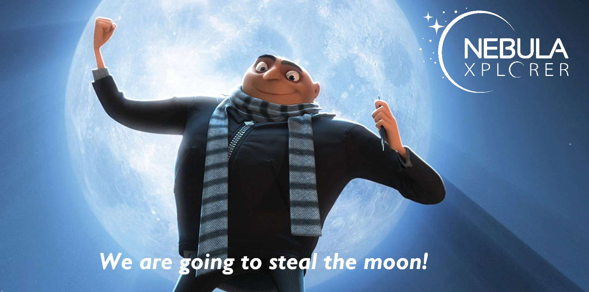
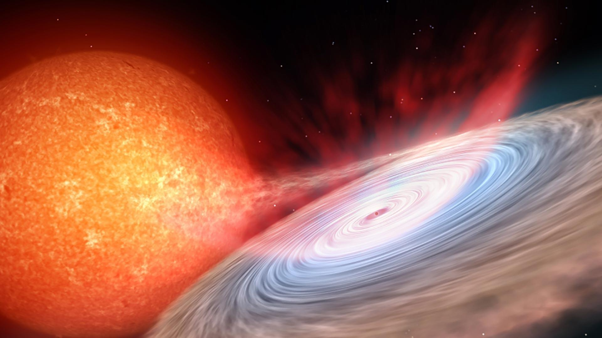

NEBULA - Xplorer
NEBULA - Xplorer staat voor “Netherlands Educational Satellite for Exploration of Binary-Linked Astrophysics - X-ray Observer”. Ongeveer vierhonderd studenten helpen SRON, veertien Nederlandse onderwijsinstellingen en vele industriële partners om deze ruimtemissie te ontwikkelen van begin tot eind, onder leiding van wetenschappers en ingenieurs. De missie heeft twee doelen. Het wetenschappelijke doel is beter begrijpen hoe een zwart gat materiaal afsnoept van een ster die er omheen draait. Het educatieve doel is dat studenten van Nederlandse onderwijsinstellingen van binnenuit meemaken hoe je een ruimtemissie van begin tot eind opbouwt. SRON heeft de leiding over NEBULA - Xplorer, waarmee het bijdraagt aan een nieuwe generatie wetenschappers, ontwerpers en technici voor het Nederlandse ruimteonderzoek.




Wetenschap
Vraagtekens rond röntgendubbelsterren
Veel van de helderste objecten in het heelal zijn röntgendubbelsterren. Dit zijn combinaties van een extreem compact object, zoals een zwart gat of een neutronenster, en een begeleidende ster. Het compacte object onttrekt in de loop van de tijd de materie van zijn begeleidende ster. Hierbij komt veel energie vrij in een gebundelde straal—een jet. Wetenschappers begrijpen dit proces is nog niet helemaal, en zeker de aard van de stroom van materie vlak naast het zwarte gat blijft een groot mysterie.
Lange observatieperiodes
NEBULA-Xplorer gaat onderzoeken hoe jets vormen en hoe deze röntgendubbelsterren evolueren. Hiervoor observeert hij deze objecten voor lange periodes om te zien hoe de emissie van deze bronnen varieert op tijdschalen van milliseconden tot weken. Deze lange observatietijd maakt het mogelijk om röntgenactiviteit te combineren met gegevens uit andere golflengtes van andere telescopen.
Instrumentatie
Compacte röntgentelescoop
NEBULA - Xplorer wordt met afmetingen van 110 bij 85 bij 50 centimeter een zeer compacte röntgentelescoop in de ruimte. Hij kan zo klein gemaakt worden door slim gebruik te maken van meerdere speciale cilindervormige spiegels die röntgenstraling weerkaatsen. De missie heeft één röntgeninstrument aan boord dat kan meten hoe röntgenstraling varieert over een lange periode. De ruimtetelescoop zal gebruik maken van bestaande, commerciële röntgendetectoren. Die koelen we af tot hun optimale operatietemperatuur van -35 graden Celsius.
Ontwerp
De studenten worden door SRON ondersteund bij het ontwerpen, bouwen en testen van de camera, elektronica en behuizing. Daarnaast krijgen ze coaching vanuit hun opleiding en de industriële partners binnen het project. We ontwikkelen NEBULA - Xplorer in nauwe samenwerking met de Nederlandse ruimte-industrie, die de technische faciliteiten bieden om de verschillende onderdelen te maken en te testen.
Opdrachten
Meedoen?
Voor studenten van Nederlandse onderwijsinstellingen zijn er voor het komend jaar de volgende opdrachten binnen de NEBULA - Xplorer missie.
- - Ontwikkeling van een structureel-thermisch model van de camera (HBO mechanica / lucht- en ruimtevaart)
- - Ontwikkeling van uitleeselektronica van de camera (HBO elektronica)
- - Ontwikkeling van signaalprocessing van de camera (HBO elektronica)
- - Onderzoek naar alternatieve lanceerplatformen (Universiteit lucht- en ruimtevaart)
- - Onderzoek naar mechanische, optische en elektronische testsystemen (Universiteit / HBO lucht- en ruimtevaart)
- - Onderzoek naar materialen en processen (Universiteit materiaalkunde)
Studeer je aan een Nederlandse onderwijsinstelling en wil je meewerken aan NEBULA - Xplorer? Vul dan het stageformulier in.